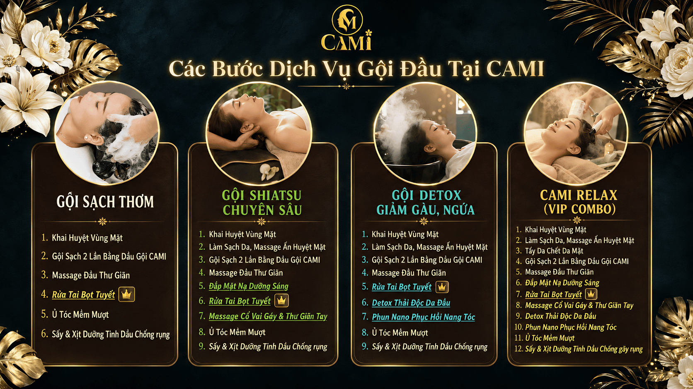

Gội Đầu Dưỡng Sinh Là Gì?
Gội đầu dưỡng sinh (hay còn gọi là head spa dưỡng sinh) là một liệu trình chăm sóc toàn diện kết hợp giữa gội đầu truyền thống và các kỹ thuật y học cổ truyền như bấm huyệt, massage da đầu, và ứng dụng thảo dược thiên nhiên.
Khác với gội đầu thông thường chỉ tập trung làm sạch tóc và da đầu, gội đầu dưỡng sinh tác động trực tiếp vào các huyệt đạo trên đầu, mặt, cổ và vai gáy — giúp khai thông kinh mạch, cải thiện tuần hoàn máu não và mang lại cảm giác thư giãn sâu.
Gội đầu dưỡng sinh = Làm sạch tóc + Bấm huyệt + Massage + Thảo dược = Phục hồi toàn diện thân – tâm.
Lợi Ích Của Gội Đầu Dưỡng Sinh
Theo y học cổ truyền, vùng đầu là nơi hội tụ của nhiều đường kinh mạch quan trọng. Khi các huyệt đạo này được kích thích đúng cách, cơ thể nhận được nhiều lợi ích thiết thực:
1. Giảm Đau Đầu và Đau Cổ Vai Gáy
Đây là lợi ích được khách hàng tại CAMI đánh giá cao nhất. Kỹ thuật bấm huyệt Shiatsu tác động vào các điểm căng thẳng ở cổ, vai, gáy — giải phóng cơn đau nhức mãn tính do ngồi làm việc lâu.
2. Cải Thiện Tuần Hoàn Máu Não
Massage da đầu nhẹ nhàng kết hợp bấm huyệt giúp tăng lưu lượng máu đến não, cải thiện khả năng tập trung, giảm triệu chứng chóng mặt và đau đầu do căng thẳng.
3. Phục Hồi Và Nuôi Dưỡng Da Đầu
Dầu gội thảo mộc và tinh dầu thiên nhiên được sử dụng trong quy trình giúp làm sạch sâu, cân bằng độ ẩm da đầu, giảm gàu và ngứa hiệu quả.
4. Thư Giãn Toàn Thân và Cải Thiện Giấc Ngủ
Nhiều khách hàng tại CAMI báo cáo ngủ ngon hơn sau mỗi buổi gội đầu dưỡng sinh. Khi hệ thần kinh được thư giãn, chất lượng giấc ngủ cải thiện rõ rệt.
5. Giảm Stress và Tái Tạo Năng Lượng
Mùi thơm của thảo dược, cảm giác ấm áp từ nước và sự chăm sóc tỉ mỉ của kỹ thuật viên tạo ra trạng thái thư giãn sâu — giúp bạn "reset" tâm trạng và tái nạp năng lượng sau ngày dài.

Quy Trình Gội Đầu Dưỡng Sinh Chuẩn Tại CAMI
Tại CAMI Quận 4, mỗi liệu trình gội đầu dưỡng sinh được thực hiện trên giường massage đa điểm chạm thế hệ mới, theo quy trình chuẩn từ 6 đến 12 bước:
| Bước | Tên Bước | Mục Đích |
|---|---|---|
| 01 | Khai Huyệt Vùng Mặt | Kích thích tuần hoàn, chuẩn bị cho liệu trình |
| 02 | Làm Sạch & Massage Ấn Huyệt Mặt | Làm sạch sâu, thư giãn cơ mặt |
| 03 | Đắp Mặt Nạ Dưỡng Sáng | Dưỡng ẩm và làm sáng da (gói từ Shiatsu) |
| 04 | Gội Sạch 2 Lần Bằng Dầu Gội Thảo Mộc | Làm sạch da đầu và tóc chuyên sâu |
| 05 | Massage Da Đầu Thư Giãn | Kích thích nang tóc, tăng tuần hoàn máu |
| 06 | Rửa Tai Bọt Tuyết ✦ | Dịch vụ độc đáo của CAMI, làm sạch tai an toàn |
| 07 | Ủ Tóc Mềm Mượt | Phục hồi độ ẩm và độ bóng cho tóc |
| 08 | Sấy & Xịt Dưỡng Tinh Dầu | Bảo vệ tóc và giữ hương thơm |
CAMI sử dụng giường massage đa điểm chạm thế hệ mới — khách hàng được massage toàn thân TRONG KHI gội đầu, không phải nằm chờ hay ngồi ghế. Đây là điểm khác biệt hoàn toàn so với tiệm gội đầu truyền thống.
Gội Đầu Dưỡng Sinh Có Phù Hợp Với Bạn Không?
Gội đầu dưỡng sinh phù hợp với hầu hết mọi người, đặc biệt là:
- Người làm việc văn phòng, thường xuyên ngồi lâu và bị đau cổ vai gáy
- Người hay bị đau đầu, căng thẳng hoặc mất ngủ do stress
- Người có da đầu nhiều gàu, ngứa hoặc tóc yếu, dễ rụng
- Người muốn có một buổi thư giãn toàn diện sau tuần làm việc mệt mỏi
- Các cặp đôi muốn cùng nhau trải nghiệm dịch vụ thư giãn
Nên Gội Đầu Dưỡng Sinh Bao Lâu Một Lần?
Theo khuyến nghị của đội ngũ CAMI:
- Tuần làm việc căng thẳng: 1–2 lần/tuần để duy trì thư giãn và sức khỏe da đầu
- Duy trì sức khỏe: 2–4 lần/tháng là tần suất lý tưởng
- Trị liệu (đau đầu, gàu, rụng tóc): Nên có liệu trình 4–8 buổi liên tục để thấy hiệu quả rõ rệt
Trải Nghiệm Gội Đầu Dưỡng Sinh Tại CAMI
153 Tôn Đản, Quận 4 · Mở cửa 10:00–21:00 mọi ngày · Từ chỉ 89K
Đặt Lịch Qua Zalo Ngay